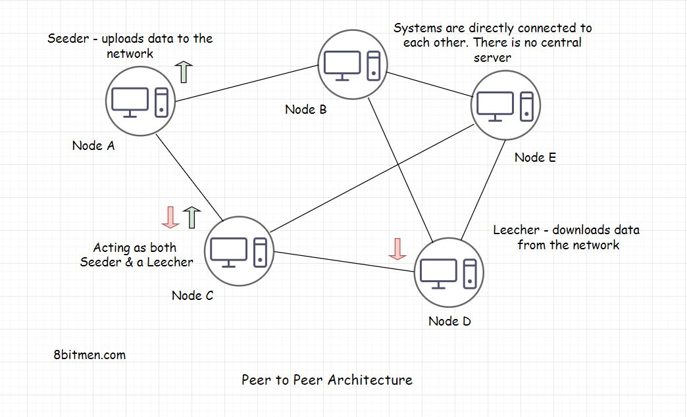
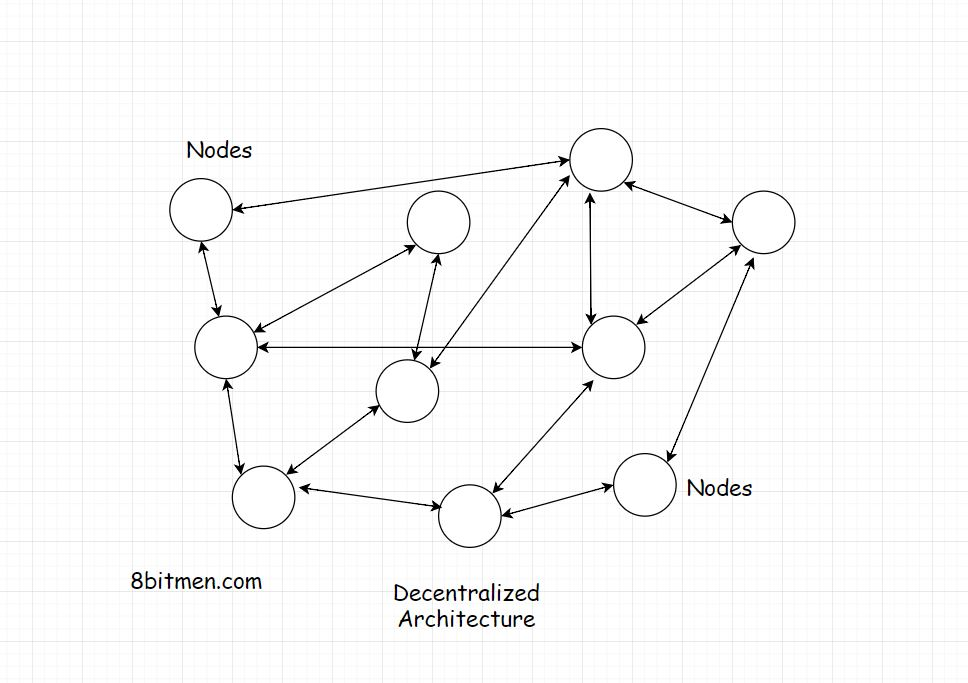

Peer to Peer Architecture – Part 1
In this lesson, which is part one of the discussion on Peer to Peer Architecture, we will take a deep dive into the architecture & discuss it in detail.
P2P architecture is the base of blockchain tech. We’ve all used it at some point in our lives to download files via torrent. So, I guess you have a little idea of what it is. You are probably aware of the terms like Seeding, Leeching etc. Even if you aren’t, you’ll learn everything in this lesson.
Let’s begin the lesson with having an understanding of what a P2P network is?
What Is A Peer to Peer (P2P) Network? #
A P2P network is a network in which computers also known as nodes can communicate with each other without the need of a central server. The absence of a central server rules out the possibility of a single point of failure. All the computers in the network have equal rights. A node acts as a seeder and a leecher at the same time. So, even if some of the computers/nodes go down, the network & the communication is still up.
A Seeder is a node which hosts the data on its system and provides bandwidth to upload the data to the network, a Leecher is a node which downloads the data from the network.

What Does A Central Server Mean? #
I want you to think of a messaging app. When two users communicate, the first user sends a message from his device, the message moves on the server of the organization hosting the messaging service, from there the message is routed to the destination, that is, the device of the user receiving the message.
The server of the organization is the central server. These systems are also known as Centralized systems.
Okay, so what’s the issue when communicating with my friend via a central server? I have never faced any issues.
Downsides Of Centralized Systems #
In this scenario, there are a few important things to consider -
-
First, the central server has access to all your messages. It can read it, share it with its associates, laugh about it and so on. So, communication is not really secure. Even though the businesses say that the entire message pipeline is encrypted and stuff. But still, data breaches happen, governments get access to our data. Data is sold to third parties for fat profits. Do you think these messaging apps are really secure? Should the national security, enterprise officials sitting at the top of the food chain use these central server messaging apps for communication?
-
Second, in case of events like a natural disaster, like an earthquake, a zombie attack on the data centre, a massive infrastructural failure or the organization going out of business. We are stranded, there is no way to communicate with our friends across the globe. Think about it.
-
Third, let’s say you start creating content on social media, you have a pretty solid following on it, you spend 100+ hours a week to put out the best content ever and have worked years to reach this point of success. But then one fine day, out of the blue, the organization pokes you and says. Hey!! Good job, but, aaaaa… for some reason, which we can’t talk about, we have to let your data go. We just don’t like your content. Shift + Del and whoosh… all your data disappears like a Genie. What are you gonna do next? If you are already a content creator or is active on social media, this happens all the time, you know that.
Fortunately, P2P networks are resilient to all these scenarios, due to their design. They have a Decentralized architecture.

What Is A Decentralized Architecture? #
Nobody has control over your data, nobody has the power to delete your data as all the participating nodes in a P2P network have equal rights. During a zombie apocalypse when the huge corporation servers would be dead or on fire, we can still communicate with each other via a peer to peer connection.
Though I’ve nothing against any of the corporations :) They’ve made our lives really easy. It’s just I am making you aware of all the possible scenarios out there.
Advantages Of A Peer to Peer Network #
Here is another use case where a peer to peer network rocks!!
Imagine this, you have finally returned home from a trekking tour. Having visited all the seven continents around the world, it couldn’t be more beautiful & emotionally satisfying.
You have documented the entire expedition with state-of-the-art cameras & equipment in super ultra HD 4K quality, which has stacked up the hard drive of your computer. You are super excited to share all the videos & photos, of the tour, with your friends.
But how do you really plan to share the data, which is in several gigabytes, with your friends?
Facebook messenger, Whatsapp?
Messengers have a memory limit, so they aren’t even an option. Well, you could upload all the stuff on the cloud & share the link with your folks, but, hold on, uploading that much amount of data needs some serious storage space & that would mean some serious money. Would you be in the mood of spending anymore after such a long trip?
No problemo, we can write all the files on a physical memory like a DVD or a portable hard drive & share with our friends, Right?
Well yes, we can but physical memory has its costs & writing files to it for every friend is time-consuming, expensive & resource-intensive. And I get it you are tired already. Oh!! & by the way, we have to courier the disks to friends located across the globe. Do add additional courier expense & of course the time it will take to reach them.
We’ve got this, don’t you worry!! We’ll surely find out some way. Okay… Alright. So, now what options do we have, remaining? Think about it.
Hey!! Why don’t we use peer to peer file sharing? That would be awesome.
With P2P Peer to peer file sharing, we can easily share all the content with your friends with a minimum, almost no costs & fuss.
Beautiful!!
We can use a P2P protocol like BitTorrent for it. It’s the most commonly used P2P peer to peer protocol to distribute data and large electronic files over the internet. It has approx. 25 million concurrent users at any point in time.
So, we will create a torrent file of our data, share it with all our folks. They have to just put the torrent in their BitTorrent client & start downloading the files to their systems while hosting/seeding the files simultaneously for others to download.
Okay!! So, these are a few of the use cases, we discussed, where P2P network rocks. In the next lesson which is part 2 of the P2P architecture, we will take a deep dive into the architecture of it.